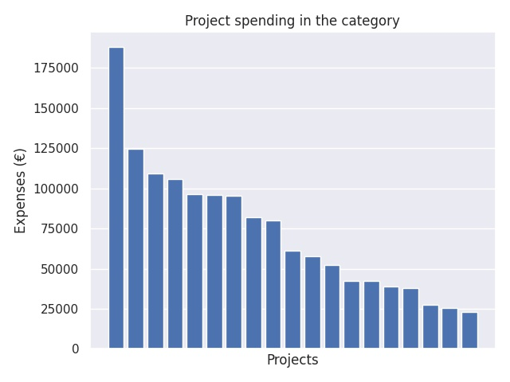

Kärkihanke 1 - hakuryhmä B: Tutoropettajatoiminnan kehittäminen alueellisesti 2017
Category summary
72.9K spent on average
188K highest spending

Reports in the category
Tampereen kaupunki/Kasvatus- ja opetuspalvelut
Project name: Pirkanmaan tutoropettajat
188K spent
Jyväskylän kaupunki
Project name: Keski-Suomen tutoropettajaverkosto
124K spent
Kalajoen kaupunki
Project name: Rannikon aluetutortoiminnan kehittäminen
109K spent
Hämeenlinnan kaupunki
Project name: Tutoropettajatoiminnan koordinointi ja osaamisen jakaminen v. 2018-2019
106K spent
Nurmijärven kunta
Project name: KUUMA TVT –verkosto alueellisen tutoropettajatoiminnan kehittämisen tukena
96.2K spent
Jakobstad
Project name: UTVECKLANDE TUTORLÄRARVERKSAMHET I JAKOBSTADSREGIONEN
95.8K spent
Kauhajoen kaupunki
Project name: Tutorix- Tutorit Etelä-Pohjanmaalla
95.5K spent
Lahden kaupunki
Project name: Päijät-Hämeen tutoropettajaverkosto
82.2K spent
Porin kaupunki
Project name: Satakunnan tutoryhteistyö
80.1K spent
Vetelin kunta
Project name: KASEtutor tvt-työhön - Kaikki mukaan Kaustisen seutukunnassa
61.2K spent
Kyrkslätts kommun
Project name: Tutor 2.0
57.5K spent
Liedon kunta
Project name: Aluetuudor
52.3K spent
Lohjan kaupunki
Project name: SILK - Alueellisen tutortoiminnan kehittämishanke
42.2K spent
Åbo Akademi
Project name: Bothnia Tutors
42.1K spent
Pargas stad
Project name: Regional tutorverksamhet i sydvästra Finland
38.9K spent
Jyväskylän Seudun Steinerkoulun kannatusyhdistys r.y.
Project name: Suomen steinerkoulujen TVT -tutortoiminnan ja -strategian kehittäminen
38.1K spent
Loimaan kaupunki
Project name: Tutoropettajatoiminnan kehittäminen alueellisesti
27.5K spent
Laitilan kaupunki
Project name: Vakka-Suomen opettajien osaamisen ja verkostoitumisen kehittäminen
25.3K spent
Porvoon kaupunki
Project name: Tutorit verkostovoimana
22.9K spent